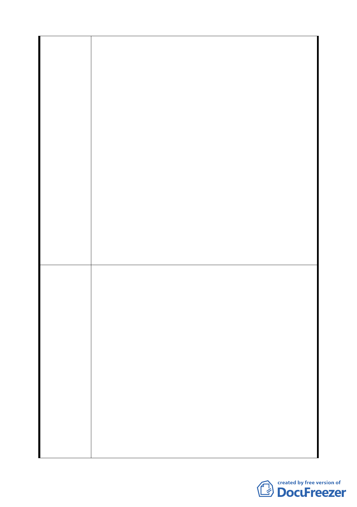

底層部建築面積 15%應提供挑空間公尺以上之公共開放空
間，且全時開放供人行穿越。』與『街廓編號 C6、C7、C8、
C9 地下一樓、一樓及二樓各樓層 30%樓地扳面積應設置零
售、餐飲，及其他經本市「臺北市都市設計及土地使用開發
許可審議委員會」審議通過之使用活動，且 15%應沿街面
設置。』2 項規定均在面積比例上或設計土有過於嚴格限縮
之規定，例如底層部建築面積 l5%、挑空 10 公尺以上、各
樓層 30%與 15%應沿街面設置..等，又本基地未來非全然係
供商場使用，因此希望政府能適度考量私人開發權益與建築
設計彈性前提下，調整相關規範。
4.查本計畫容積及高度放寬規定 1、(3)高度比放寬之規定『: 建
築物各部分高度不得超過自該部分起量至面前道路中心線
水平距離之 5 倍。』，等文字，所使用之高度比檢討方式與
『臺北市土地使用分區管制規則』計算高度比 (自對側道路
中心線)方式不同，且也限縮原本臨公園用地、綠地、廣場 ...
等空間得將其寬度納入之可能性，反而可能造成限制，減損
高度放寬之美意，因此陳情放寬高度比之計算方式採以與
『臺北市土地使用分區管制規則』規定方式辦理。
1.將編號 2-1 號道路往北側調整為廣場用地，以舒緩捷運車站
通往商務中心人潮。
2.街廓編號 C6、C7、C8、C9 維持原得提供作為寄宿住宅之
規定或同意適當比例提供員工訓練使用所需之附屬住宿設
施。
3.有關『街廓編號 C6、C7、C8、C9 底層部建築面積 15%應
提供挑空間公尺以上之公共開放空間，且全時開放供人行穿
建議辦法
越。』與『街廓編號 C6、C7、C8、 C9 地下一樓、一樓及
二樓各樓層 30%樓地扳面積應設置零售、餐飲，及其他經
本市「臺北市都市設計及土地使用開發許可審議委員會」審
議通過之使用活動，且 15%應沿街面設置。』2 項規定均在
面積比例上或設計土有過於嚴格限縮之規定，希望能適度考
量私人開發權益與建築設計彈性，調整相關規範。
4.放寬高度比之計算方式採以與『臺北市土地使用分區管制
規則』規定方式辦理。
5.針對上述陳情內容，檢附「擬定臺北市南港經賀園區經貿
24